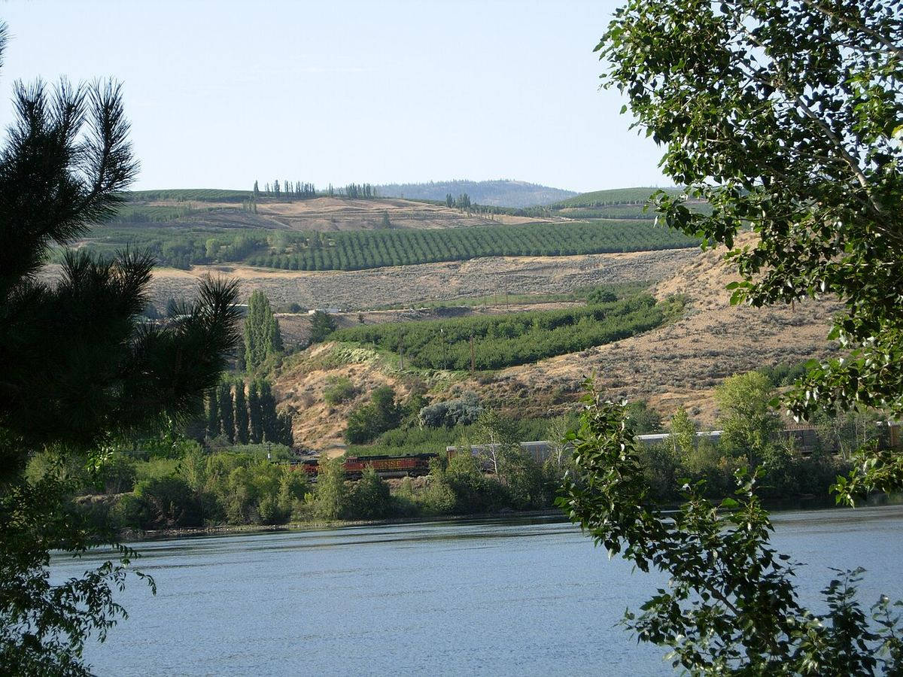

BLANCO
Inicio › Estados Unidos › Columbia Valley
AVAColumbia Valley
Gran AVA del estado de Washington, con una pequeña parte en Oregón, situada al este de las Cascadas en un clima semiárido de veranos soleados. Concentra la mayor parte del viñedo de Washington.

Historia
Los primeros viñedos del estado de Washington se plantaron en el siglo XIX, y tras la Prohibición la producción se centró durante décadas en uvas de mesa, zumo y vinos de variedades americanas como la Concord. La viticultura de Vitis vinifera orientada a la calidad despegó en los años sesenta y setenta, con empresas como la que se convertiría en Chateau Ste. Michelle y con pequeñas bodegas pioneras en Walla Walla y Yakima. Yakima Valley fue la primera AVA del estado, y poco después se reconoció la gran AVA Columbia Valley, que engloba a la mayoría de las demás. Desde los años noventa el número de bodegas ha crecido con rapidez, y Washington se ha consolidado como el segundo estado productor de vino del país, por detrás de California. Muchas bodegas tienen su sede cerca de Seattle, al oeste de las Cascadas, y elaboran allí vino con uvas transportadas desde el este del estado.
Clima y suelos
La cordillera de las Cascadas detiene las borrascas del Pacífico y deja el este del estado en una sombra pluviométrica: el clima es semiárido, con muy poca lluvia, veranos cálidos y secos e inviernos fríos. La latitud septentrional proporciona días de verano muy largos, y las noches frescas ayudan a conservar la acidez. El riego, procedente del río Columbia y de sus afluentes, como el Yakima y el Snake, es imprescindible. El principal riesgo son las heladas invernales intensas, capaces de dañar las cepas. Los suelos, arenosos y limosos, proceden en gran parte del loess y de los sedimentos depositados por las inundaciones de Missoula al final de la última glaciación; son pobres en materia orgánica y bien drenados. Como la filoxera apenas se ha establecido en estos suelos, muchas viñas se cultivan sin portainjerto.
Subzonas
La AVA contiene numerosas subzonas, entre ellas Yakima Valley, Walla Walla Valley (compartida con Oregón), Red Mountain, Horse Heaven Hills, Wahluke Slope, Rattlesnake Hills, Snipes Mountain, Ancient Lakes y Lake Chelan. Red Mountain, una de las más pequeñas, es conocida por sus tintos potentes de Cabernet Sauvignon.
Estilos
Washington ofrece tintos de fruta madura pero con acidez marcada, sobre todo de Cabernet Sauvignon, Merlot y Syrah, así como mezclas de tipo bordelés. Entre los blancos destacan el Riesling, en estilos que van de secos a dulces, y el Chardonnay. También se cultivan Cabernet Franc, Sauvignon Blanc y, en menor medida, otras variedades.
Vinos · Columbia Valley
BLANCO